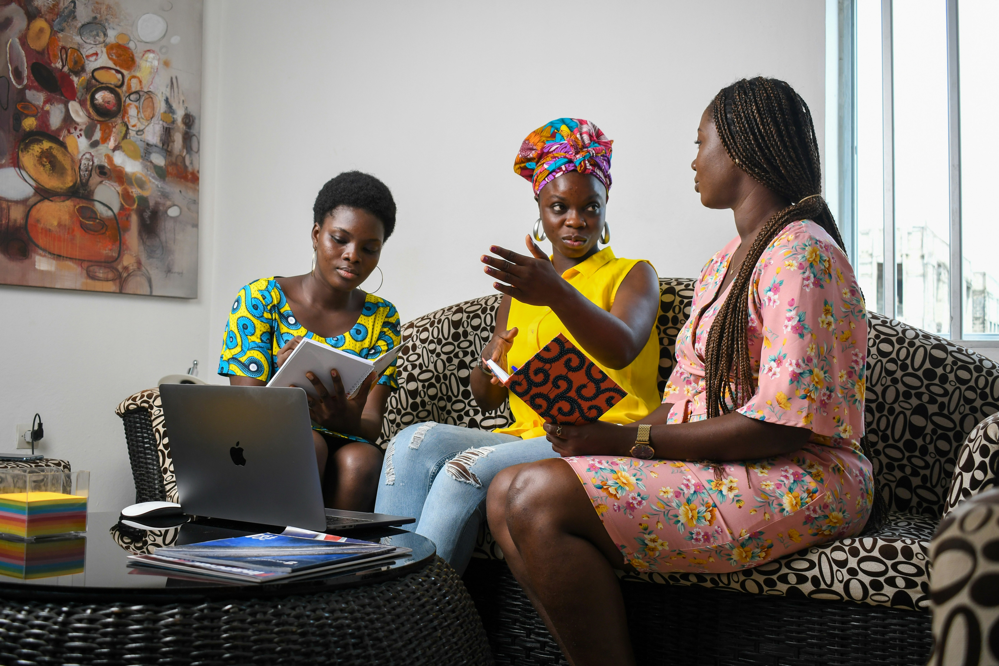

The Resilient Woman Africa
Our flagship women's empowerment platform promoting wholeness, wellness, leadership and financial confidence through the Resilient Woman Conference, Network and Podcast.
Explore the platform
In alignment with the United Nations Sustainable Development Goals 3, 4, 5, 8 and 17, we design interconnected programmes that improve lives, strengthen families and build resilient communities.
Our work is anchored on six strategic pillars. Each one addresses a different barrier women and girls face, and together they form a single system of support rather than a set of isolated projects.
Promoting healthier lives through preventive healthcare, women's and menstrual health, mental and emotional wellbeing, nutrition, fitness and healthy lifestyle education. We advance health awareness, early detection and access to essential health information and services.
Expanding access to education, digital literacy, technology and future-ready skills for women, girls and young people. We work to bridge learning and digital divides while creating opportunities for lifelong learning, innovation and participation in the digital economy.
Equipping girls and women with the confidence, knowledge and skills to become purposeful, resilient and values-driven leaders through mentorship, leadership development, capacity building and personal growth opportunities.
Strengthening women's financial confidence and independence through entrepreneurship support, financial literacy, business development, digital skills and opportunities for sustainable livelihoods and wealth creation.
Building inclusive and supportive communities where women and girls can connect, heal, learn and thrive. Our work includes mentorship, peer support, community engagement, protection initiatives and support for vulnerable populations, including women affected by gender-based violence.
Amplifying women's voices and experiences through media, strategic communications, storytelling and advocacy. We work to challenge harmful social norms, promote gender equality, increase visibility and inspire action towards positive social change.
Our strategic pillars are brought to life through an integrated ecosystem of eight initiatives.
Our flagship women's empowerment platform promoting wholeness, wellness, leadership and financial confidence through the Resilient Woman Conference, Network and Podcast.
Explore the platformOur storytelling and advocacy platform amplifying African women's voices, experiences, achievements and opportunities through inspiring stories and practical knowledge.
Read RIA MagazineOur preventive health initiative promoting health awareness, early detection, healthy lifestyles and access to essential health information and services.
Our menstrual health and dignity initiative advancing education, sustainable menstrual product access, school outreach and advocacy to address period poverty and break menstrual stigma.
A leadership and mentorship programme equipping girls and young women aged 16 and above with the confidence, knowledge and skills to become purposeful, independent and influential leaders.
Our digital education and empowerment initiative equipping women and girls with practical digital skills, technological knowledge and entrepreneurial capabilities to thrive in the digital economy.
A community of donors, volunteers, partners, ambassadors and advocates committed to sustaining our mission through giving, collaboration and active participation.
Become a FriendOur proposed integrated facility bringing together healthcare, fitness, therapy, skills development and safe accommodation to support healing, recovery, wellbeing and independence, particularly for women and vulnerable populations.
Together, these initiatives create a connected support system through which women and girls can access opportunities to learn, grow, lead, become economically independent and build healthier, more fulfilling lives.
These earlier programmes shaped the ecosystem we run today. Several have since grown into the named initiatives above, and the work they began continues under those banners.
Entrepreneurship, financial literacy and wealth building, now carried forward under Economic Empowerment.
Girls' education, school outreach and mentorship, now carried forward under HERLead and Education & Digital Inclusion.
Menstrual health education and hygiene kit distribution, now carried forward under the MenaRise Initiative.
Preventive health awareness for women, now carried forward under Wellness Chronicles.
Mentorship, confidence building and public speaking, now carried forward under HERLead.
Our original wellness facility concept, now developed into the ONM Centre for Health, Healing & Empowerment.